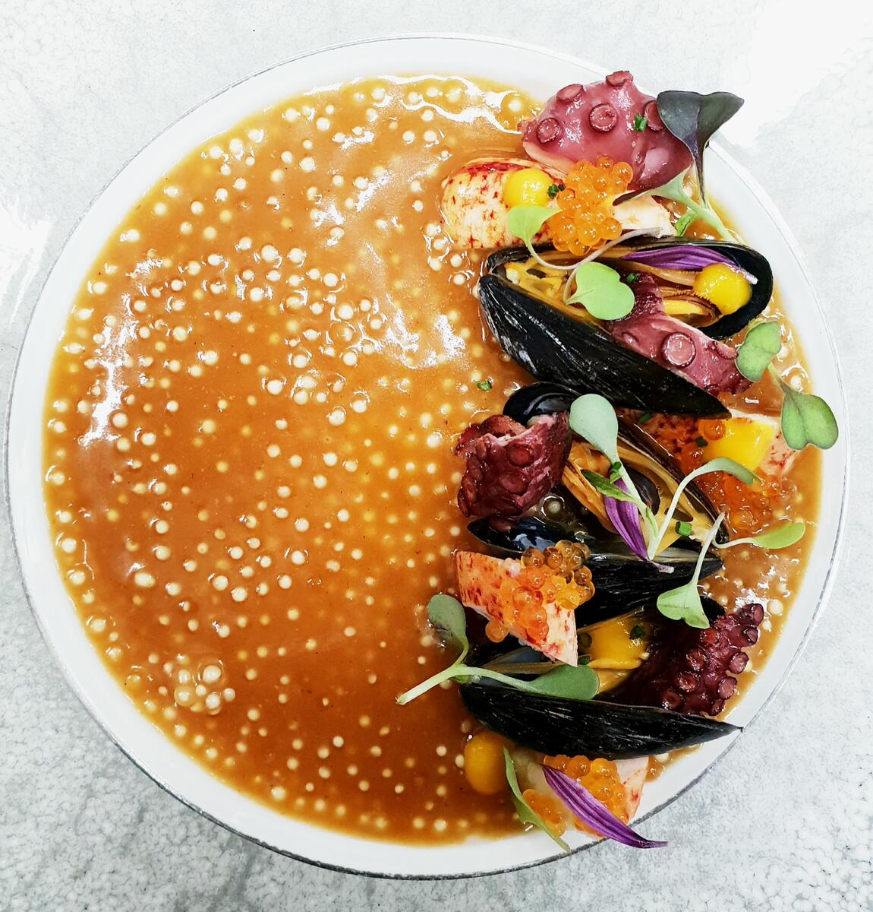
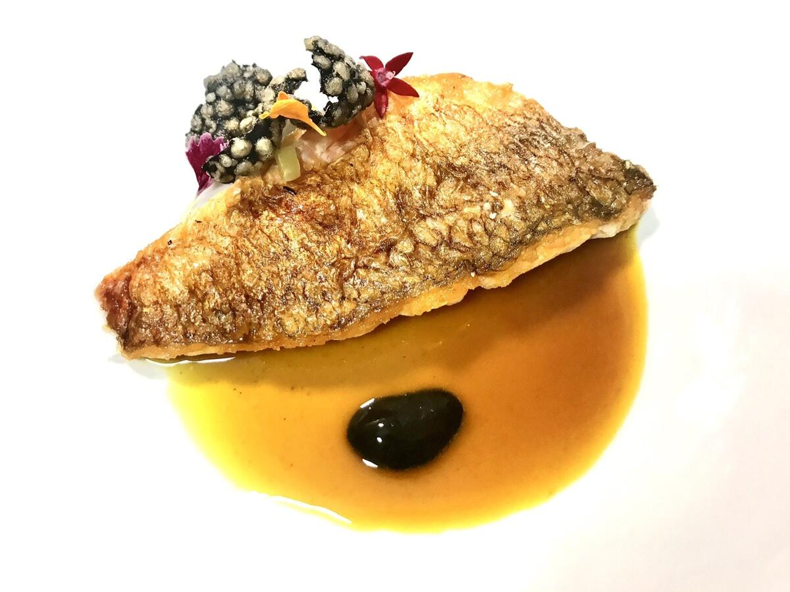
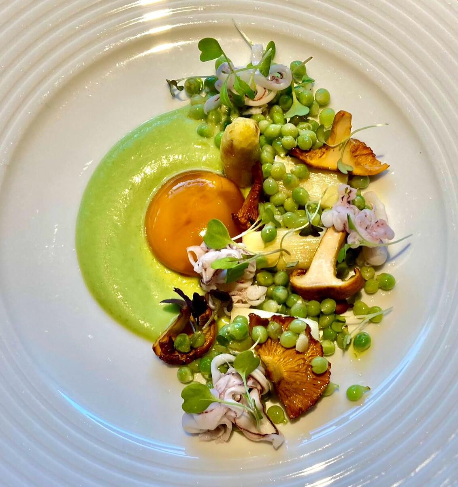
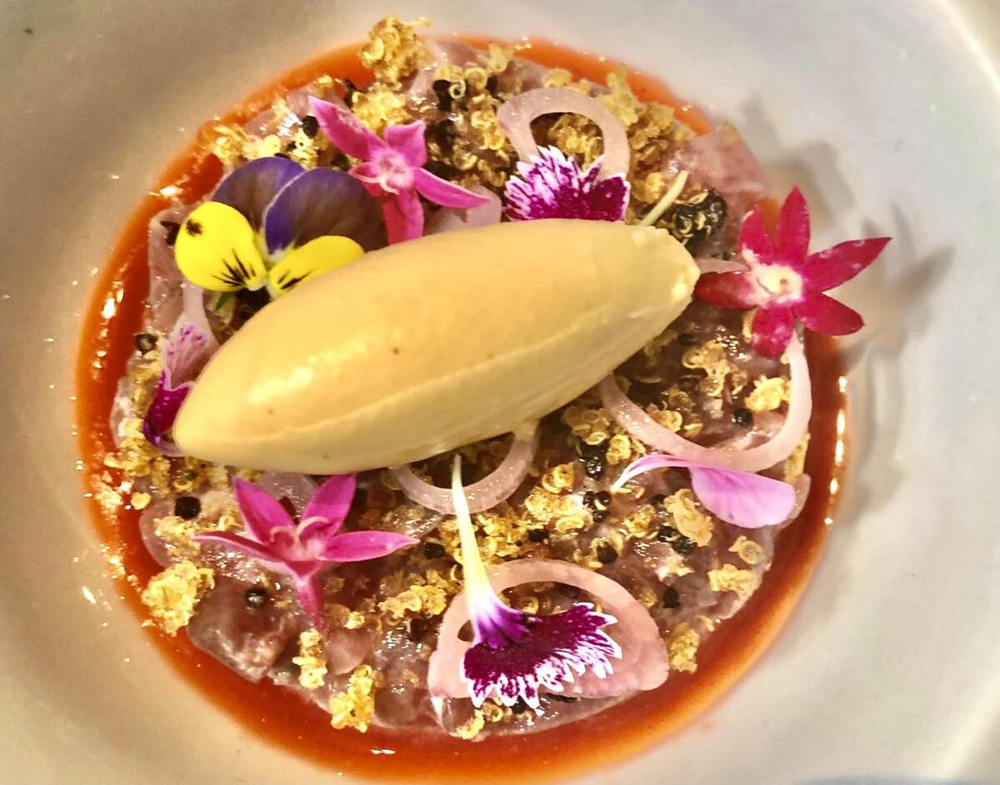
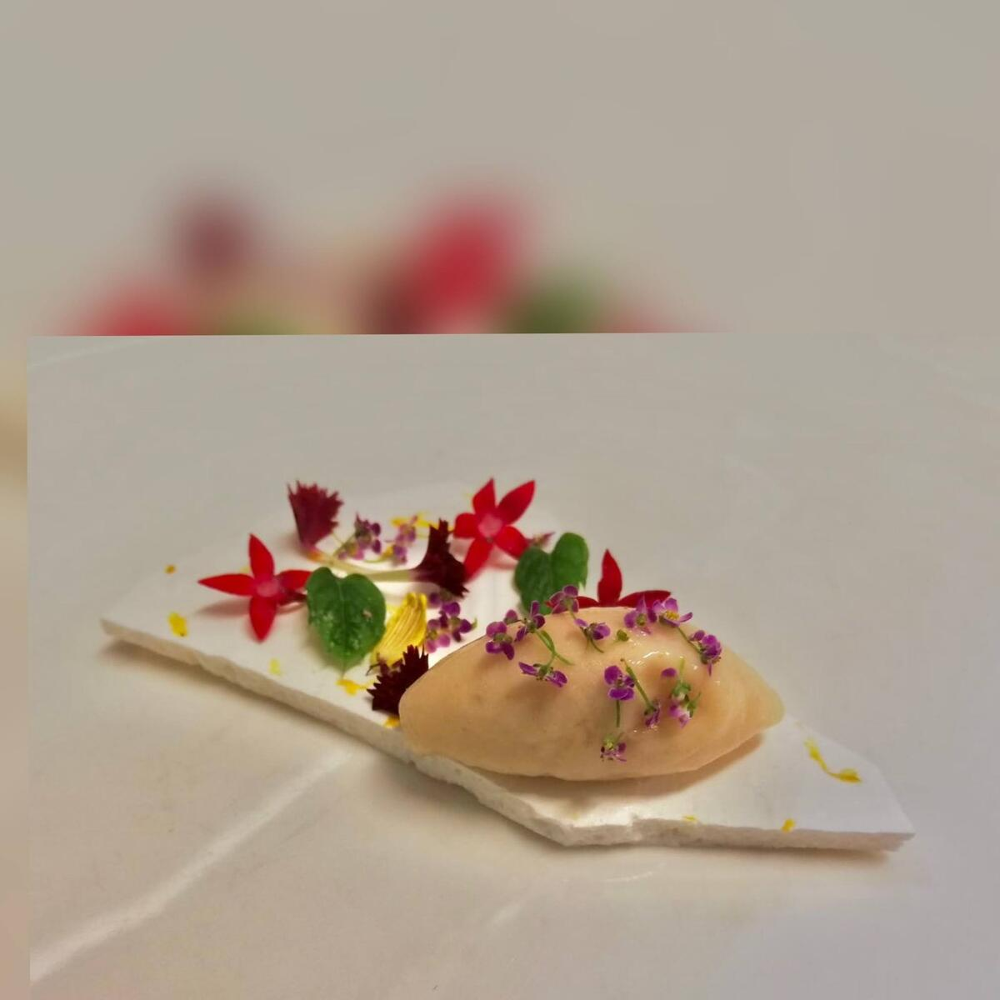
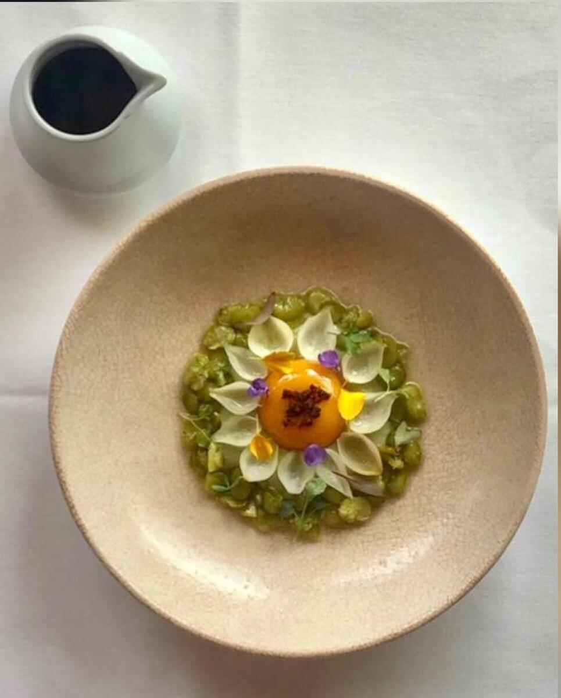

Chef peruano de Piura, actualmente en Donostia–San Sebastián. Casi veinte años de experiencia en cocina profesional entre Estados Unidos y España. Mi cocina combina raíces peruanas, formación técnica francesa, producto mediterráneo y la tradición vasca.






Instagram: @abelibarrachef
WhatsApp